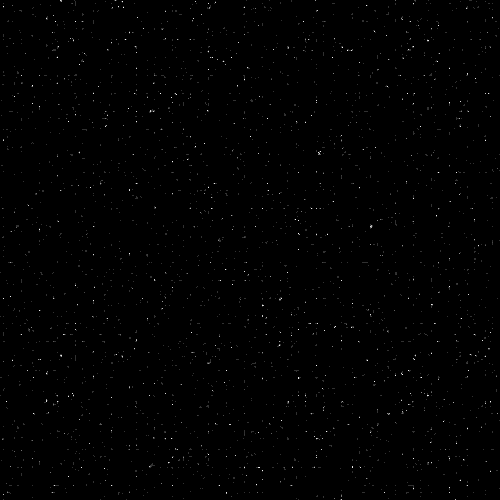

- Cele mai frumoase lucruri despre primavara
- Culorile frunzelor:
- frunzele copacilor capata nuante vii de auriu, rosu intens si portocaliu arzator datorita descompunerii clorofilei
- Recolta bogata:
- livada si via ofera mere rosii, struguri dulci si dovleci mari. Este momentul ideal pentru prepararea gemurilor, compoturilor si a vinului de casa, plin de arome autentice.
- Plimbari in natura:
- parcurile si drumurile forestiere devin locuri perfecte pentru plimbari relaxante, fotografie si contemplare.
Pe langa frumusetea vizuala, toamna aduce cu sine si o serie de traditii si activitati care definesc acest anotimp in cultura noastra. De la recoltarea strugurilor si prepararea mustului proaspat, pana la festivalurile locale dedicate vinului nou, totul se imbina armonios cu atmosfera linistita a sezonului.
Aceasta perioada ne aminteste cat de pretios este echilibrul dintre lumina si intuneric, dintre caldura ramasa si racoarea care vine.
Toamna ne invata sa apreciem roadele muncii si sa ne pregatim cu recunostinta pentru anotimpurile
